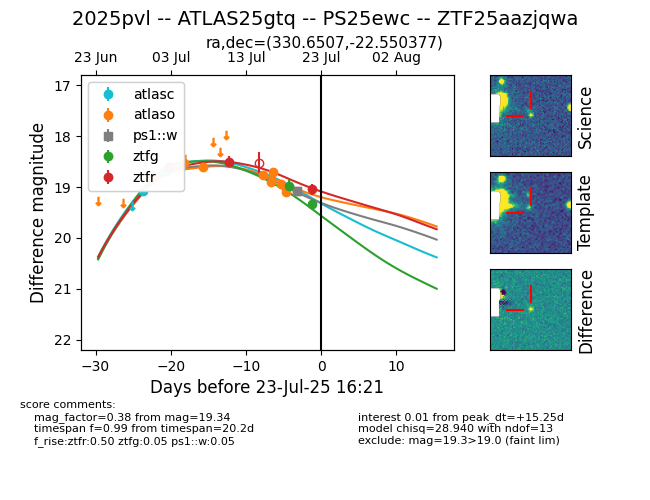

Target ZTF25aazjqwa at 2025-07-23 16:21, see:
FINK: fink-portal.org/ZTF25aazjqwa
Lasair: lasair-ztf.lsst.ac.uk/objects/ZTF25aazjqwa
ALeRCE: alerce.online/object/ZTF25aazjqwa
TNS: wis-tns.org/object/2025pvl
YSE: ziggy.ucolick.org/yse/transient_detail/2025pvl
alt names
ZTF25aazjqwa (ztf,fink)
2025pvl (tns,yse)
ATLAS25gtq (atlas)
PS25ewc (panstarrs)
coordinates:
equatorial (ra, dec) = (330.6507,-22.55038)
galactic (l, b) = (30.2208,-51.59894)
photometry
last atlasc=18.68, atlaso=19.09, ps1::w=19.09, ztfg=19.34, ztfr=19.05
2 atlasc, 8 atlaso, 2 ps1::w, 2 ztfg, 3 ztfr detections
